DxDesigner:
Getting started with DxDesigner2007 is a snap. When you finish this tutorial you will be able to dive into creating your schematic.
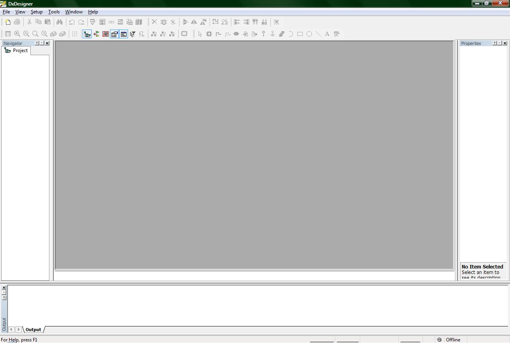
(1-Start.jpg)
When you open up DxDesigner, the previous picture should be what it should look like. If DxDesigner is opened up for the first time, it will open up the new project wizard, saving you the trouble of a couple mouse clicks. If DxDesigner opens the new project wizard automatically for you, either close it and follow the tutorial, or just keep reading until I catch up to where you are.
There are two ways to open a new project: 1. Use the new button. 2. Use the file menu
The new button looks like the following and is located just underneath the file menu.
(2-new_button.jpg)
The file menu method looks like the following
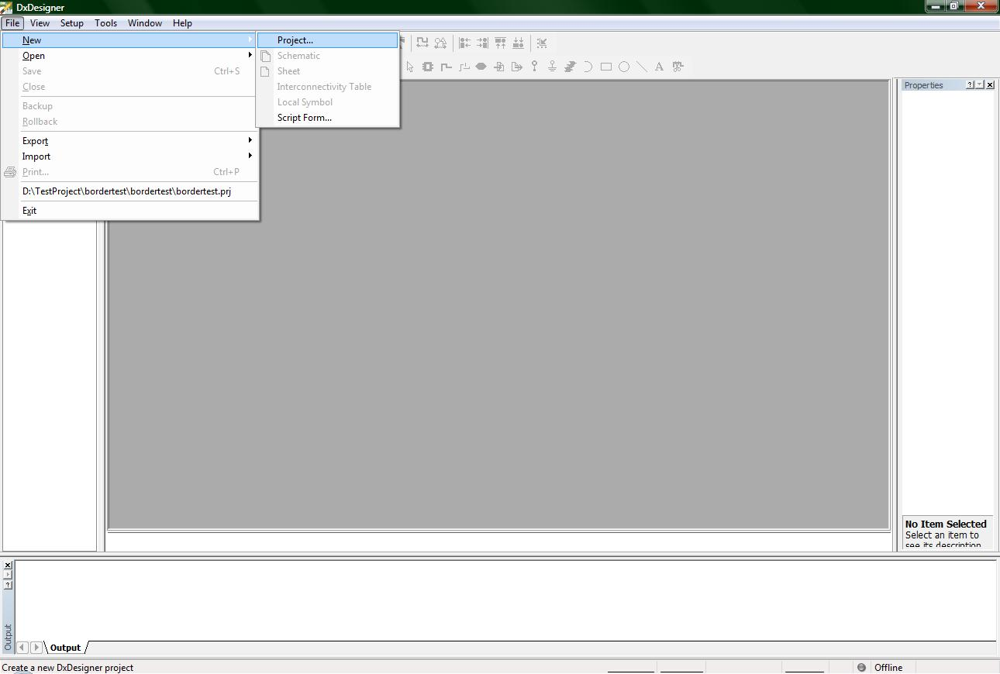
(3-file_new.jpg)
Using either method will open up the following wizard
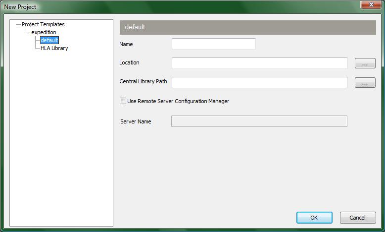
(4-new_project_wizard.jpg)
You will not need to worry about the left side of the screen which has a navigation tree. You will only need to specify information for the three named fields:
Name
Location
Central Library Path
The name field is obvious. It gives a name to your project. The location field is where you want your project saved. If you are a student from ece189 make sure to save your project to your personal drive (normally Z:) or you will not have access to it if you leave that computer for another. The Central Library Path is also self explanatory. Browse for the .lmc file for your Central Library which should also be on your personal drive. Now you are ready to click the button OK on the bottom right.
Now to introduce you to some buttons to customize your interface.
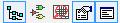
(5-interface_buttons.jpg)
The following list are the names and functions of those 5 buttons, listed from left to right:
1. Navigator: This button opens up the project navigator tab on the left side of the screen.
I highly recommend using this tab to have access to all files in your
project.
2. Symbols: This button opens up a window on the bottom of the screen where you can
access your Central library Parts and Symbols. Use the Parts section when implementing your schematic that way you will be able to forward your schematic to Expedition PCB later on.
3. ICT Viewer: This button opens a small window on the bottom left of the screen that
gives you a small image of the Part.
4. Properties: This button opens a window on the right side of the screen that will list all
of the attributes of something you have clicked on. Right now it should be
empty because you do not have a schematic, but when you have a wire, bus
or part on your schematic you will be able to view the attributes of each by
left clicking on them and view them in this window.
5. Output: This button opens a window on the bottom of the screen. This shows actions
taken, shows when you save, and also shows errors that occurred while creating a schematic.
My recommendation is that, for now, you close all extra windows except for the navigator window. They are only clutter until you get more familiar with the program.
Now you will need to create a new schematic file. This is done the exact same way as starting a project so you shouldn’t need much guidance for this one, but I will do it anyways. Click on the new button and click on schematic from the drop down menu, or click file->New-> Schematic. The following picture shows the file menu method.
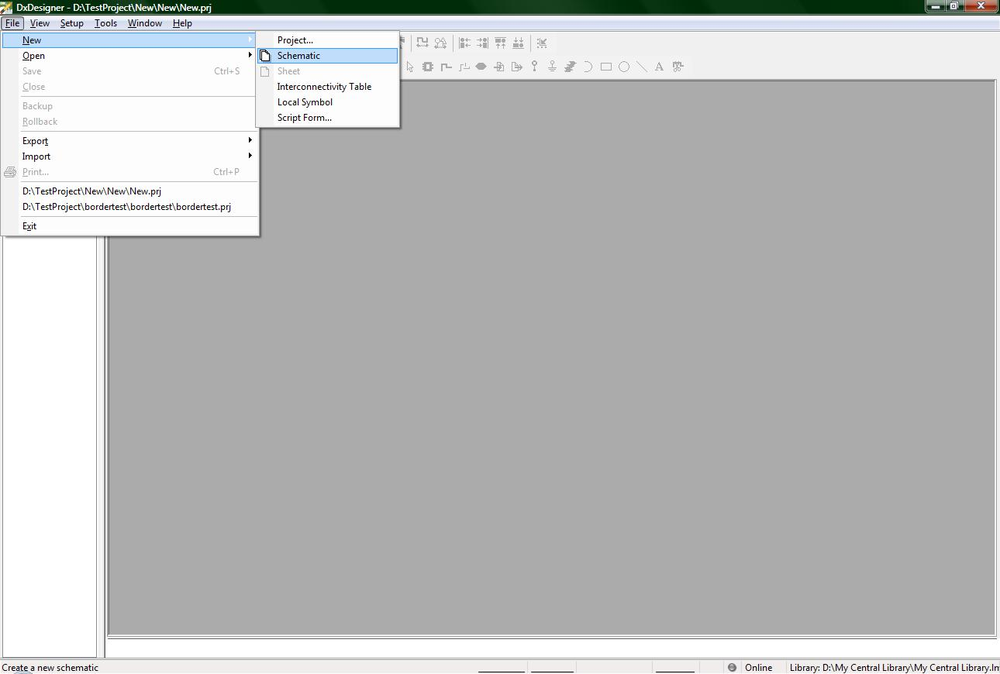
(6-new_schematic.jpg)
Once you have done the previous step, your screen should now be black and have grid dots like the following image.
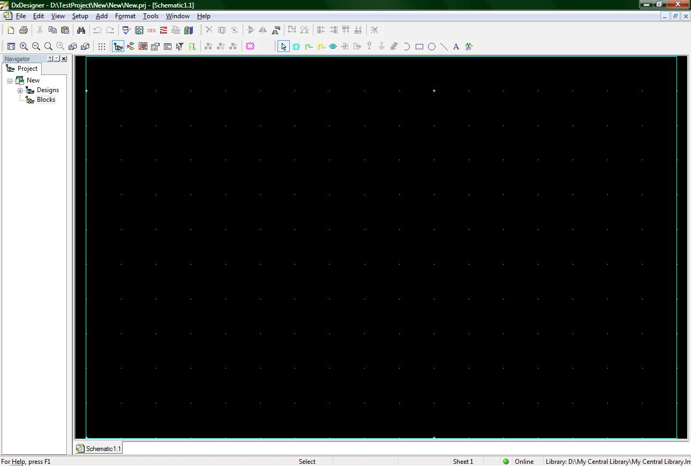
(7-new_schematic_displayed.jpg)
Technically you could start your project right now without further ado, however to make your schematic “printer friendly” as well as give it a more professional touch, we are going to add a border to it, but before we do even that we will need to name your schematic.
On the left hand side of the screen is your Navigator window (unless you have already moved it, but that’s okay as long as you know which window I am referring to). Right next to the name of your project a ‘+’ should have appeared on the left hand side of the word ‘Designs’. Click on the ‘+’ to open up all your designs, then click on the next ‘+’ of ‘Design1’, then click on the last ‘+’ of ‘Schematic1’. Why have all these files? The reason for all of these files is because large companies (e.g. IBM, Boeing, or Intel) will not just have one design, but perhaps many designs under one common project. Within those designs there will be many different schematic layouts of those designs, and some of those designs will have multiple pages to make those schematic layouts less complex to view and manipulate.
Now that the file hierarchy has been briefly introduced to you, I am going to guide you in naming these designs, schematics. You will need to name these because the mentor graphics tools will take these names and place them on your border. They do this because then you only need to specify the name of your schematic in one location, and all the sheets to that schematic can pull out the name from there.
Okay, on to naming. The simplest thing to do is to name your design and schematic the same as the project name. If you are in ECE 189A at UCSB, you are most likely only going to have time to create one schematic (or multiple versions of the same schematic) so naming the design and the schematic the same thing will not matter so much. To rename the Design, right click on ‘Design1’ and click on rename from the drop down box just like the following image suggests.
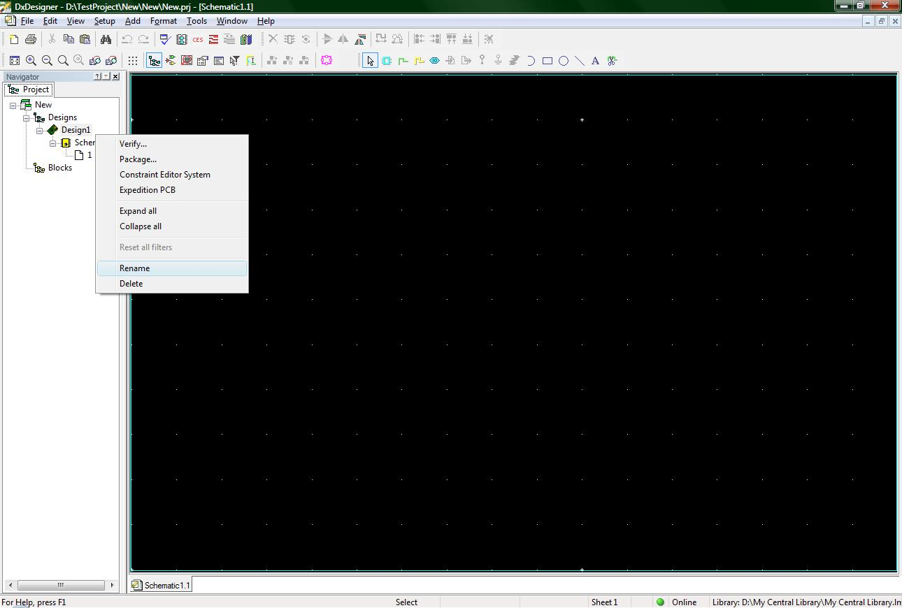
(8-rename_design.jpg)
Do the same step for renaming ‘schematic1’ to the name of your project.
Now to specify some more information. Click on the menu Setup->Settings and the following window should appear
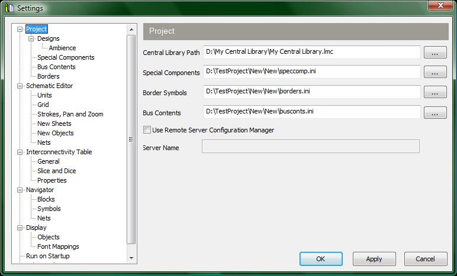
(9-settings.jpg)
There are a lot of settings that can be modified or edited, however we are only concerned with the borders settings at the moment. In the settings navigator field on the left side of the settings window you should see the word ‘Borders’. Click on it to have the window look like the following:
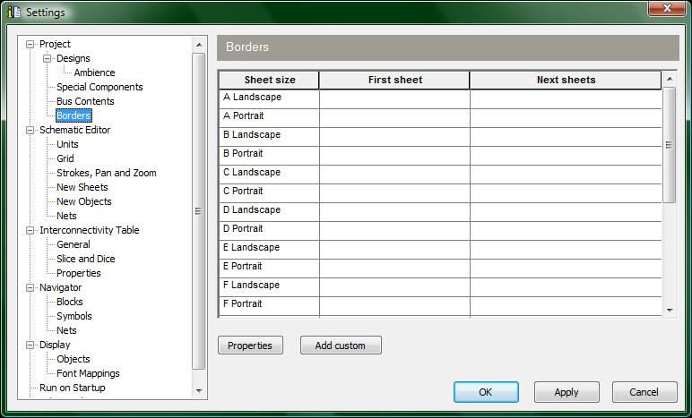
(10-borders_settings.jpg)
There are many different sheet sizes, but for ECE 189 you will be using a B sheet. So click on the space in the ‘first sheet’ column and the ‘b landscape’ row. This will make another window appear that looks like the following (well, similar to the following image because your central library might have different partitions).
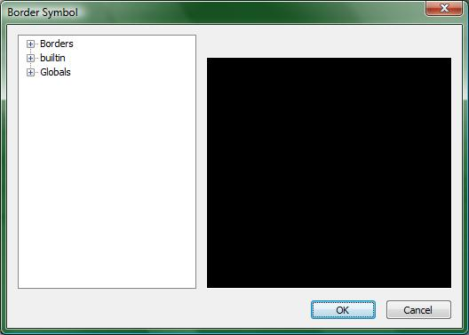
(11-border_symbol_window.jpg)
At this point you will need to browse for the border. If your instructor provides you with a specific border sheet to use, browse your central library for it (provided you added it to the central library first!!). If there has been no specific borders sheet to use, you might find the border you are looking for in the borders partition of your central library (once again providing you have not changed your partitions).
Once you have found the sheet you want, click the ok button and then its time to click on the space in the ‘next sheets’ column and the ‘b landscape’ row. Add the same sheet you added previously.
Now that you have added your borders, the Settings window should look a little bit like this:
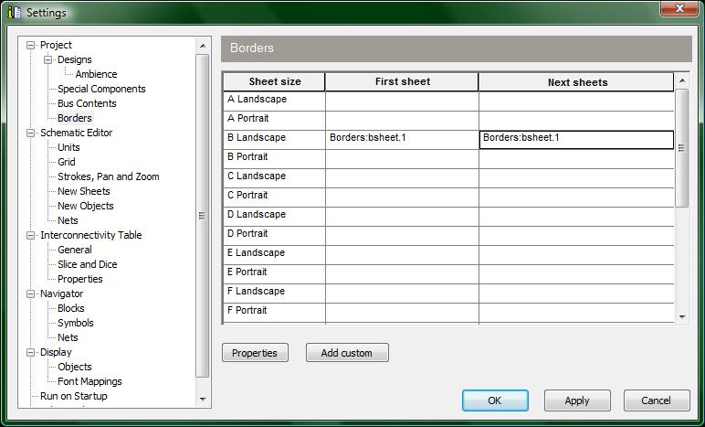
(12-border_sheets.jpg)
Almost finished! We just need to add the final details needed to make your border perfect. Click on the properties button near the center of the settings window to display the following window.
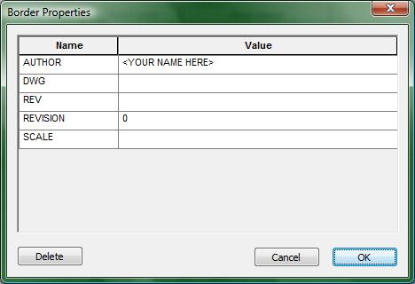
(13-border_properties.jpg)
This window allows you to write the name of your schematic drawer, or better known as the ‘Author’ field, and you can specify which revision you are on. Since this is your first schematic, just specify 1 for the revision, and then enter the names of the schematic authors.
Once you are done, click ok on both the border properties window, and then once again on the settings window. At this point you should be back to viewing your black screen with white grid dots. Right click in your blank schematic to open up the following drop down menu:
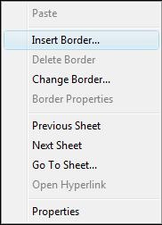
(14-right_click_window.jpg)
As implicitly hinted at by the previous image, click on the ‘Insert Border…’ option and now your schematic should have a proper border. If you did not change the name of your schematic, which was previously named schematic1, the Title field of your border will be populated with schematic1 instead of the name you will want to display.
If you want to make changes to your border, no sweat! If you wish to change the Drawn By field, merely go back to the border properties window (if you do not remember how, scroll up in this tutorial to find out how) and edit the Author field. If you do not like Title field, rename your schematic name in the navigator window on the left side of the screen. What is important to note about making modifications to your border is that after you make these changes they are not immediately changed on your border. To make these changes appear, you will need to delete your border and then insert it back again. To delete your border, right click on the schematic and then click on the option Delete Border from the drop down menu. To re-insert it back, follow the steps previously described above.
Now you are ready to get started creating your design! Have fun!